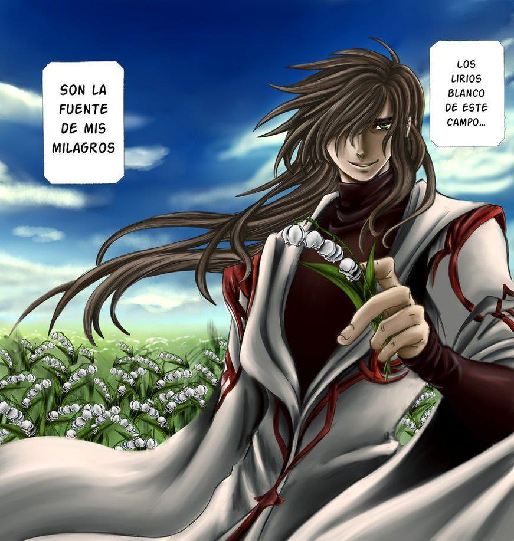

Dríades são ninfas ou espíritos da natureza da mitologia grega que vivem em árvores. O termo também pode ser usado para se referir a ninfas de outras árvores.
Elas eram espíritos femininos que personificavam a graça e a fecundidade da natureza. Eram protetoras e enciumadas com o que possuíam. Frequentemente, eram alvo da luxúria devido ao seu belo corpo escultural, mesmo que muitas não admitissem sua beleza.
São seres de natureza espiritual que personificavam mulheres jovens e atraentes. A palavra "ninfa", em grego, significa "moça", "mulher jovem" e também tem ligação com a palavra "noiva". Por isso, as Dríades faziam com que muitos aventureiros as cobiçassem, até mesmo morrendo por elas.
De acordo com uma antiga lenda, cada Dríade nascia junto com uma árvore específica, da qual exalava um odor maravilhoso. O cheiro das Dríades era capaz de entorpecer até os corações mais rígidos.
Quando a sua árvore era cortada ou morria, a divindade também perecia. Os deuses frequentemente puniam quem destruía tais árvores.
Quem ousasse ferir a Dríade ou sua árvore, sofreria a ira tanto do céu quanto do inferno.

Os lírios são uma flor sagrada em diversas culturas ao redor do mundo, sendo muito utilizados na ornamentação de casamentos, devido à sua relação com as Dríades.
Os lírios eram flores que simbolizavam a maternidade e a fertilidade, cultivas pelas Dríades.
Quando uma Dríade lhe dá um lírio, pode significar diversas coisas, mas todas positivas: admiração e paixão, pureza e amizade, segurança e beleza, matrimônio, pureza e maternidade.
Uma Dríade sabe como conquistar um ser vivo, seja homem ou mulher. Sua presença e aroma doce cobrem o ar, enchendo os olhos de quem a observa. Ela é uma flor bela e perfeita, que nunca deve ser magoada. Deve receber amor e cuidados, pois: a Dríade é a mulher que pode cuidar daquele que a cuida.

As Dríades são belas, incríveis e criaturas doces, mas... nem tudo é de graça.
Quando as Dríades entregam seus lírios matrimoniais a alguém, deixam a pessoa extasiada. Elas são perfeitas e tratam a pessoa extremamente bem, mas, com o tempo, ela se torna cada vez mais dependente da presença da Dríade em sua vida.
Os lírios das Dríades, apesar de belos e cheirosos, acabam tornando aquele que os recebe um escravo, um escravo que desejará a mesma eternamente... Não por questões carnais ou qualquer tipo de dependência, mas porque os receptores dos lírios se apaixonam tanto por ela que não conseguem mais viver sem sua presença.
